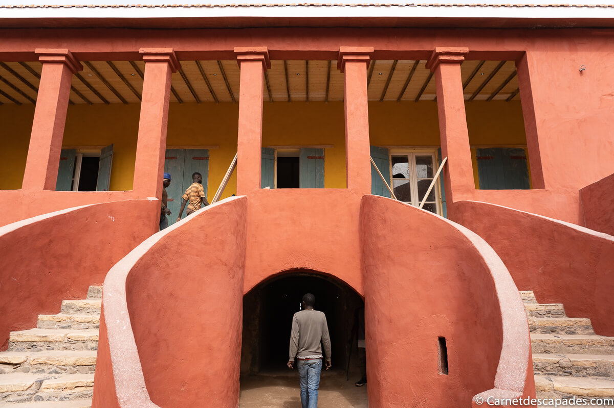
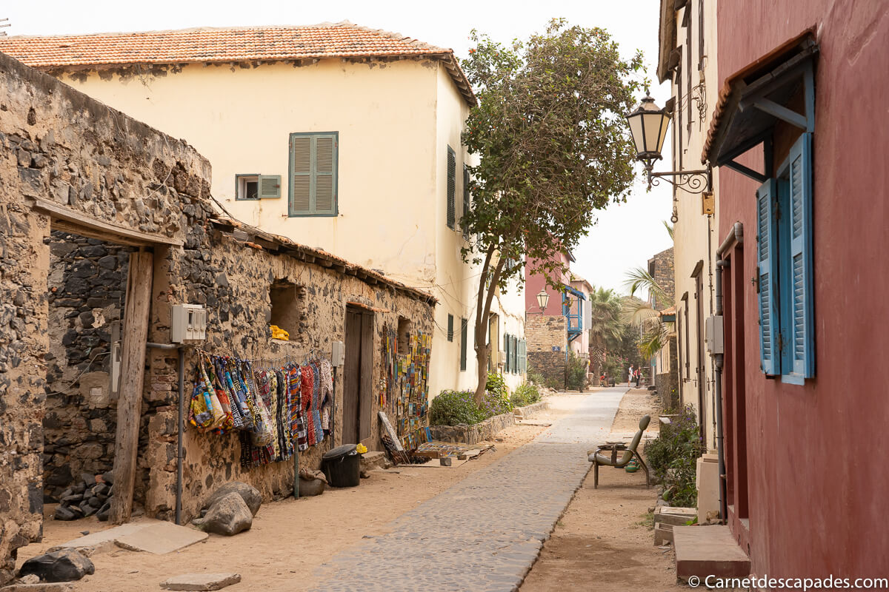
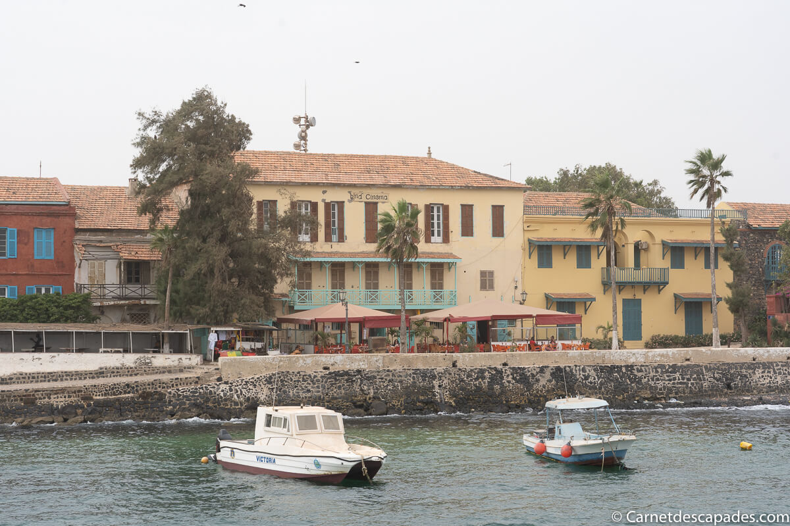

L'île de Gorée
L’île de Gorée est une petite île entièrement piétonne de 28ha située au large de Dakar, à 3,5 km de la capitale sénégalaise. C’est l’un des incontournables d’un voyage au Sénégal. L’histoire de Gorée est très particulière puisqu’elle fut, du fait de sa situation géographique à l’ouest de l’Afrique, le plus grand centre de commerce d’esclaves de la côte africaine du 15e au 19e siècle. Elle est d’ailleurs à ce titre classée au Patrimoine mondial de l’UNESCO pour le témoignage exceptionnel qu’elle apporte sur la traite négrière.
La maison des esclaves

La Maison des Esclaves est la visite incontournable de Gorée et un lieu de mémoire important pour la diaspora africaine. Attention, elle est fermée le lundi, prévoyez votre venue sur l’île un autre jour de la semaine! Il s’agit de la maison où les esclaves auraient été entassés avant de partir pour l’Europe et l’Amérique. La visite de la Maison des Esclaves permet de se plonger dans ce terrible passé : c’est une visite vraiment émouvante et marquante, durant laquelle on apprend de nombreuses choses sur les conditions de détention des esclaves, leur vente, etc.
Juste à côté de la Maison des Esclaves, on peut également voir la statue de la libération de l’esclavage des artistes guadeloupéens Jean et Christian Moisa, qui commémore l’abolition de l’esclavage.
Musée historique

Situé sur la pointe nord de l'île, le Musée historique occupe l'ancien Fort d'Estrées. Il est consacré à l'histoire générale du pays, des origines à l'indépendance, et tout particulièrement à celle de l'île de Gorée, avec, notamment mais non exclusivement, le souci d'expliquer et de commémorer le commerce des esclaves qui a sévi dans cette région.
Balade dans les rues de Gorée
 L’histoire de Gorée est tragique mais l’île est de nos jours un lieu très agréable où il fait bon se promener. Du fait de son occupation portugaise, néerlandaise, anglaise et française, l’île de Gorée a conservé un grand nombre de beaux bâtiments coloniaux de styles variés. De plus, c’est une île très fleurie, avec de jolies petites plages, et sans voiture. Il y règne une atmosphère paisible et reposante qui contraste avec le reste du Sénégal.